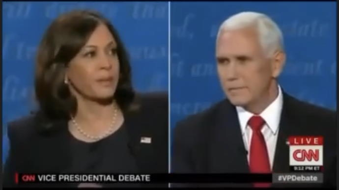

洗完澡了精神抖擞容光焕发，上网乱转没发现什么重要情报，彭迈克贺锦丽主持《新闻联播》①的内容就放在《异闻录》那边了，因为《设定集》的年代还没有雌权主义，这也是众所周知的历史事实。顺便，这边已经有「所有男人的女人兼所有女人的男人」凯撒大帝作为吟游诗人曰若稽古指桑骂槐的模板了，所以飒爽美少年「孔雀王」发动男娼起义建立奥特曼帝国担任苏丹专挑公马捅屁眼的素材还是留在那边吧。
另外，大盎帝国詹姆斯一世也是个「召唤英灵」的模板：
现在看来，除了英俊之外，再没什么原因可以解释他们为何会成为国王的选择了。国王陛下那强烈的爱意或许说明他弄错了对方的性别，把他们当成了女性，难怪萨默塞特爵士和白金汉公爵如此刻意地把自己打扮成女人的样子。虽然他们的一举一动都显得妖冶放浪，但是他们在模仿女性方面的成就已经到了言语都无法形容的地步。
据称这位龙裔在唐宁街与英俊的内阁商谈国家大事之后回到白金汉宫，被拜倒在老婆丹麦公主安妮石榴裙下的八三四幺部队王家陆军于怀仁堂皇家马厩使用烧红的通条捅屁眼而驾崩。
老生常谈倒是看到一些，比方说「平等与平均」：
再比方说「共产主义与资本主义与“封建资本主义”与“民族社会主义”」：
这一组正交关系，又可以使得剧情中各个角色运用自由意志之随机过程所嵌入的生存空间多出一个维度。
所以，截止到目前的正文当中（如第十四篇《食不厌精脍不厌细》）出现了镰刀榔头符号也不必奇怪，前面注释中援引红皮书结论提到了早期基督教就是奴隶和无产阶级的信仰。类似的思潮自打有史以来就存在了，没发明文字之前当然没有史，只有当时的高学历精英也就是祭司口耳相传的神话传说。
补充色目含量甚高的情报掮客提供的重要情报：
喝多了回来了，简单写几句睡了。
刚才酗酒的时候又竖起耳朵搜集邻桌八个北京口音的情报掮客不打自招爆料泄漏的国家机密兼宇宙奥秘了。
简单说，那边酒酣耳热就开始嘲笑胡锦涛，说当初带头申报个人财产的时候，只报了五千元人民币。有人点头承认，引用红色文艺精品《开国大典》时候大救星出门吃饭不给钱是因为兜里确实没钱。再然后就甩包袱了，说五千块钱够干嘛的，二十年常委十年三位一体，啥事也没干，理所应当。
接下来是小道消息，说领导带头之后，八千万锤镰帮众当中的纯傻哔都开始高举紧跟了，基层党员实事求是的就把几十年工龄买断之后交首付贷款买的房子都算进去，报了几十万，立刻就被纪委捉走了当成贪污腐败典型昭告天下，反倒是中高层干部哼哼哈哈能拖就拖，拖到中央喊停，这事不了了之，再没有下文了。
然后就是提起砥砺奋进七八年来，上百万亿都放出去了，温家宝四万亿都成了零头。说现在若是再搞个活动申报财产，习禁评至少四万万五千万亿富翁，拿个清华博士诺贝尔奖轻而易举，谁质疑抄袭剽窃借鉴复制并成功，肯定会被人民民主专政铁拳一力降十会砸烂狗头再踏上十四万四千乘以两只脚永世不得翻身。反驳观点也不过是说，即便习禁评要脸，李克强就会趁势而起申报四万万五千万亿家产，九点四亿网民除了百分之八点八本科学历之外，都是看谁钱多支持谁，无论「乞丐」有啥划时代贡献都会被党性坚定的老审查员以「政治敏感」理由「亦当删去」。
刚爬起来酒劲还在头昏脑胀，对于上面记录的情报略作补充。
简单说，情报掮客爆料的中心思想是「移风易俗」，自打锤镰帮坐江山以来，官方媒体的宣传口径都是「官大钱少」「官越大钱越少」，然后被红色文艺精品《开国大典》当中大救星出门吃饭不给钱也不刷卡还不用智能手机扫码的形象捅了个口子，说权钱之间不是简单的兑换关系。而本届班子公开形象则截然相反，习禁评吃了21元早餐，李克强买了19元食品，已经在职务和现金之间建立起正比例关系了也。
说胡锦涛时代的反腐，就是钓鱼式执法，鱼钩还是直的，鱼饵就是「总资产五千元人民币」。谁敢申报超过这个数字，立刻逮走砸烂狗头打翻在地，然后就都知道「坦白从宽，牢底坐穿，抗拒从严，回家过年」了也。而砥砺奋进七八年来开始正面宣传「官大钱多」「官越大钱越多」了，虽然还在遮遮掩掩，那是因为兲朝还没解体的缘故，啥时候政治局常委排名与福布斯榜重合了，啥时候《新闻联播》开始插播广告。
也就是说，对于《设定集》背景「跑步进入资本主义前夕」的氛围，完全可以参考现实理解，还是党国高音喇叭昭告天下的公开新闻，一点都不「政治敏感」，但是除了盎视记者独家报道之外，其它复读机企图弘扬主旋律传播正能量，还是会被党性坚定的老审查员「亦当删去」。
长话短说，今天中午出门箪食瓢饮之前，家中有线网络还是好的，喝多了回来之后发现不能用了，到晚上起来之后都这样。
不惮以最大的恶意揣测，这是因为砥砺奋进七八年来追着我狂喷「反汉贱种中国通」的色目情报掮客，包括但不限于「匿名岛夷の萝莉账号」在爱泼斯坦蒙主宠召之后化悲痛为力量，为了美帝灯塔国大选而到处放风带节奏，但是被我当作素材引用之后节奏带得更歪，于是恼羞成怒气急败坏，开始撒泼耍赖满地打滚了也。
估计在月底兲朝锤镰帮开会乃至下月初花旗大选之前，繁荣的简体中文互联网上「高筑墙」会修到终端用户家里，党性坚定的老审查员会把支部建在桌上，所以简单写几句结束本篇注释。
一直都在犹豫是不是再开几篇设定继续展开背景，实际上就从《了却一桩心事》《小结》《小结〔续〕》《小结〔再续〕》这四个时间点的横截面也能看出来，每次决定告一段落，比如「手头这几篇」「预告中的几篇」完成之后，碰上网上娱乐至死の色目逗哔或现实中色目混混鸡鸣狗盗之徒挑衅，就会迸发灵感，「一时手痒」「按捺不住喋喋不休的冲动」「里程碑式惹是生非」，从而在那千疮百孔的卡壳世界当中找个切入点随便捅捅就是一个窟窿。
之前的注释当中提到了「三矾九染全面发展」的构思原则，好比在那「天还很蓝草还很绿空气还很清新那谁们还是处女，车马邮件网速都很慢一天只够喷一个人」的时代之浏览器那样，专门优化过的图像文件在加载的时候是由粗糙到细致逐渐清晰的，而不是现在这样以为普及了5G就能一秒下载一部蓝光电影结果实践中总发现连图片都是从上到下从左到右每分钟才显示一行像素的情况。
这次断网之前，还在国际化大都市「华语第一精日论坛」之上看到码字巨侠の赞助商指使的情报掮客嘲笑仆街写手「想到哪儿写到哪儿」，说之前千八百章铺垫的伏笔到完本都没用上，然后话锋一转吹捧钦定文豪「大纲在心里」「二十二条军规升级路线图各显神通」「代笔文笔跌宕起伏」……最终结论：「请不要误会，我不是特指谁，我是说在座的各位都是垃圾」。
这还不算放话「你写一段我抄一段」或者「批阅十载增删五次照样一把火烧光」之类兵法娴熟の卓越的军事兲才深入学习大手情报机构の岗位职责发表心得体会的日常。
具体到码字，《设定集》也好《异闻录》也好，都是不打草稿写一段上传一段，码字过程面向人民群众文字直播并面向举头三尺有棱镜视频直播，从内容到形式从素材到正文都是个人独立完成，在「干惊天动地事」的时候没有利用任何「隐姓埋名人」，于是「犯了众怒」。一帮「码字工作室」的文曲星纷纷义愤填膺，包括但不限于「中央书记处」、已经撤销的「江办」「胡办」、正在营业的「习办」「李办」，反复强调政治规矩和组织纪律「功劳是集体的，错误是个人的，权利是领导的，责任是员工的」。
所以说，这帮「伪装成自然人的法人」就是「vtuber皮」，身份证倒是有，但不是一个而是一沓。自打出道以来就签了卖身契的名角大腕负责演绎扁平人物，各种政治标签都要明显凸出，包括但不限于「皇家马厩视频直播捅屁眼」就为了「非主流性取向」的那些选票。
于是在影射当中就是要放大这些特征「信号」，还得「降噪」，不仅要变本加厉「凸出」标签，还得对其它企图烘托名角大腕也有血有肉的日常向报道选择性无视，素材取舍需要「笔则笔削则削」，口号是「让扁平人物更加扁平」，并美其名曰修辞手段「夸张」之实践。这种以彼之道还施彼身的「娱乐至死」，与娱乐至死の色目逗哔想像的场景不太一样吧？也难怪它们恼羞成怒气急败坏。
这就是「以政治和意识形态为纲，纲举目张」并且「上纲上线上不封顶」的码字原则，只要「写一段」一定要有攻击力，等着看「抄一段」被用到哪里去，然后再添油加醋「抄回来」，从而形成正反馈过程。在《异闻录》那边还不明显，而在《设定集》这边则是最典型的体现。碎片积累多了，拼图就完整了，卡壳世界渐渐变得与本位面「几乎处处一致」了。只要知道主席台前三排不是扔钢镚投票掷骰子发文件，那「大纲」肯定在它们心里，接下来就是「码字工作室写一段，我抄一段」的操作了。
总之，无一字无来历，剧情开放线索封闭，所有伏笔都会回收，架空历史也遵守墨菲定律「名角大腕的形象可能有多恶心，就一定会那么恶心」，言必信行必果硁硁然。
- ①